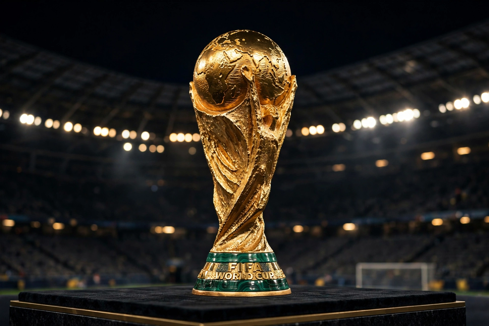

From Wikipedia, the free encyclopedia
| FIFA World Cup | |
|---|---|
 The FIFA World Cup Trophy, a golden trophy depicting two human figures holding up the Earth | |
| Founded | 1930 |
| Organiser | FIFA |
| Teams | 32 (48 from 2026) |
| Current champions | Argentina (3rd title, 2022) |
| Most successful | Brazil (5 titles) |
| Most appearances | Brazil (22, every tournament) |
The FIFA World Cup, often simply called the World Cup, is an international association football competition contested by the senior men's national teams of the members of FIFA, the sport's global governing body. The tournament has been held every four years since the inaugural edition in 1930, except in 1942 and 1946 due to the Second World War. The reigning champion is Argentina, which won its third title at the 2022 tournament in Qatar, defeating France in a final widely considered among the greatest ever played.
The World Cup final is the most widely viewed sporting event in the world; the 2022 final was watched by an estimated 1.5 billion people. The next tournament will be the 2026 FIFA World Cup, jointly hosted by the United States, Canada and Mexico, and expanded to 48 teams.
The first tournament was held in Uruguay in 1930, to celebrate the country's centenary; the hosts won, beating Argentina 4–2 in the final in Montevideo. Italy won in 1934 and 1938. After the wartime hiatus, Brazil's golden era brought titles in 1958, 1962 and 1970, led by Pelé, the only player to win three World Cups. England won its only title at home in 1966; West Germany, Argentina (1978, 1986 — the latter driven by Diego Maradona), France, Italy and Spain have also lifted the trophy. The current golden trophy, introduced in 1974, replaced the Jules Rimet Trophy, which Brazil kept permanently after its third win.
| Year | Host | Winner | Runner-up | Score |
|---|---|---|---|---|
| 2006 | Germany | Italy | France | 1–1 (5–3 pens) |
| 2010 | South Africa | Spain | Netherlands | 1–0 (a.e.t.) |
| 2014 | Brazil | Germany | Argentina | 1–0 (a.e.t.) |
| 2018 | Russia | France | Croatia | 4–2 |
| 2022 | Qatar | Argentina | France | 3–3 (4–2 pens) |
Brazil is the most successful team with five titles and the only one to have played in every tournament. Germany and Italy have four titles each. The all-time top scorer is Germany's Miroslav Klose with 16 goals. Lionel Messi holds the record for most World Cup appearances (26) and captained Argentina to its 2022 triumph, winning the Golden Ball.
Categories: FIFA World Cup | Association football competitions | Recurring sporting events established in 1930